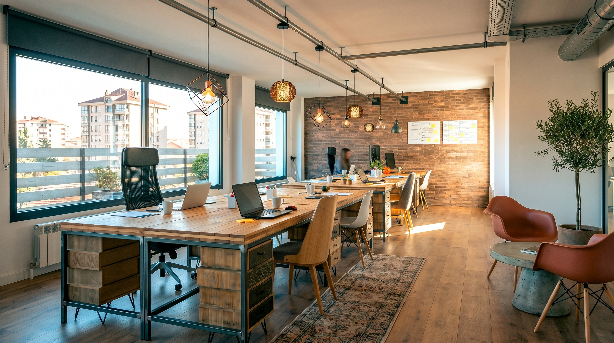
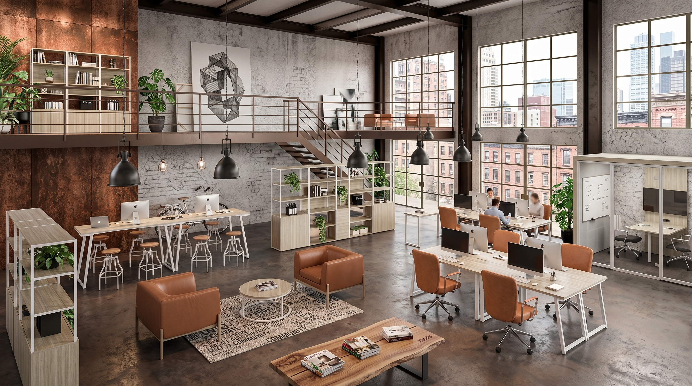
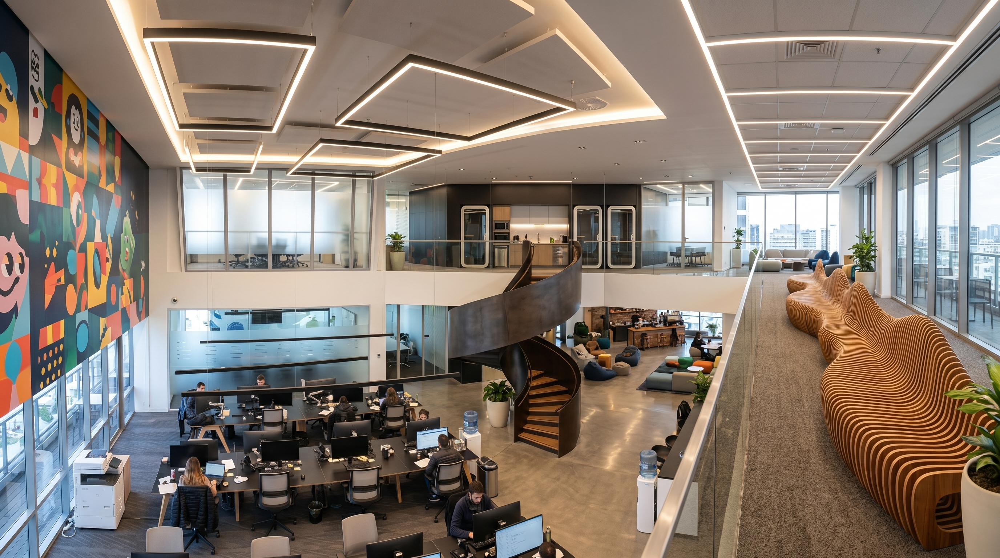
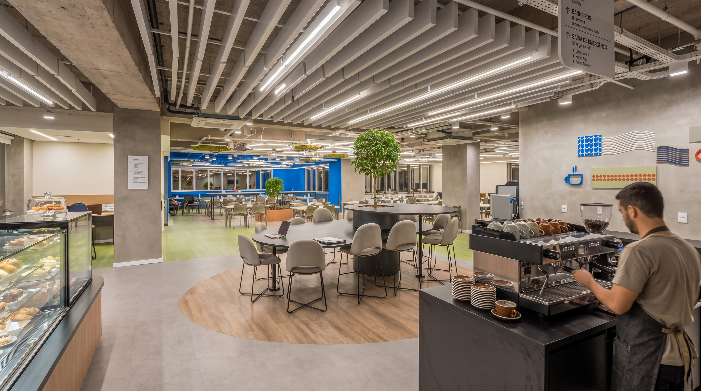
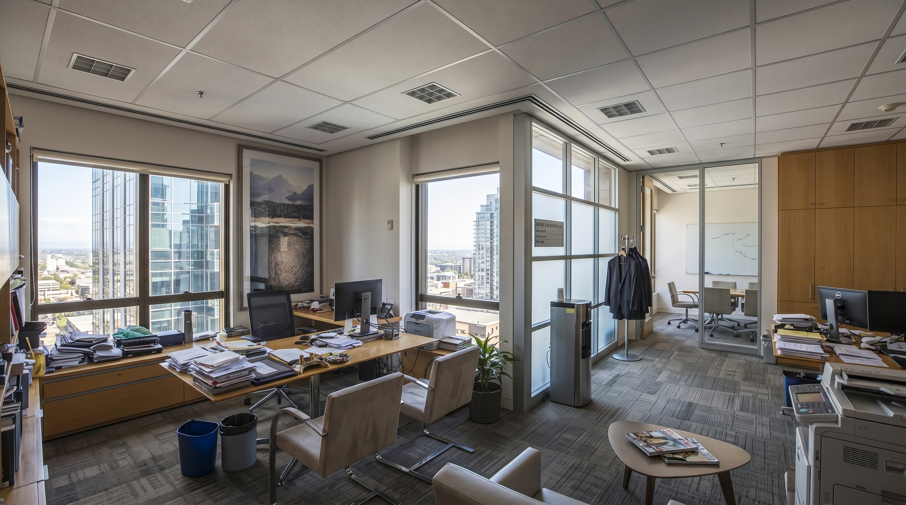
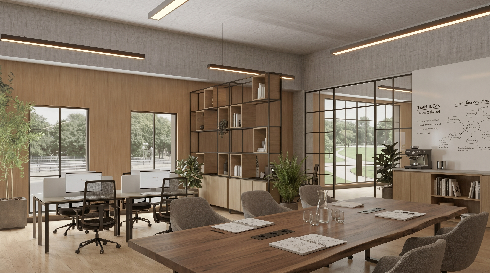

Comercial
Espaços comerciais desenhados para comunicar valor, melhorar o atendimento e apoiar a operação com elegância, eficiência e identidade de marca.

01 - Posicionamento
Espaços que posicionam a marca
O espaço comercial precisa deixar claro quem a marca é, para quem ela fala e qual percepção deseja construir. Arquitetura, layout e materiais trabalham esse posicionamento.
02 - Jornada
Recepção, fluxo e venda mais claros
A jornada começa na porta: onde o cliente entra, espera, circula, compra, pergunta e finaliza o atendimento. O projeto organiza esse percurso para tornar a experiência fluida.


03 - Operação
Uma experiência mais profissional
Balcão, estoque, atendimento, exposição e bastidores precisam funcionar juntos. Um layout claro reduz fricção para a equipe e melhora a percepção do cliente.
04 - Memória
Um espaço que fica na memória
Um ambiente memorável não depende de excesso. Ele depende de coerência: fachada, recepção, atendimento e detalhes repetindo a mesma mensagem de marca.


05 - Percepção
Materiais que comunicam valor
Materiais comerciais precisam comunicar e resistir. A escolha considera limpeza, manutenção, fluxo de pessoas, iluminação e o nível de sofisticação que a marca quer transmitir.
Vamos transformar seu espaço em uma experiência de marca?
Conte sobre sua marca, seu fluxo de atendimento e o tipo de percepção que você quer construir no cliente.
Agendar uma conversa